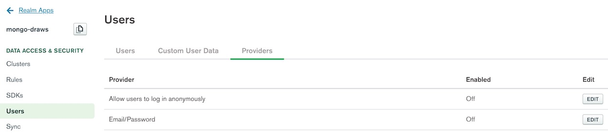
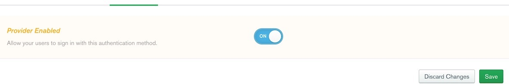
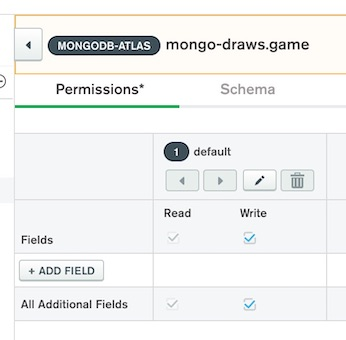
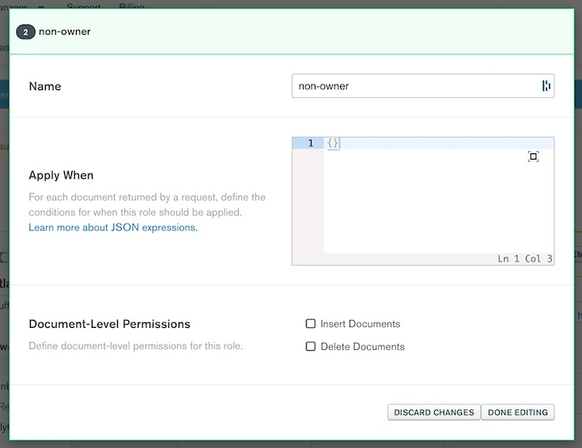
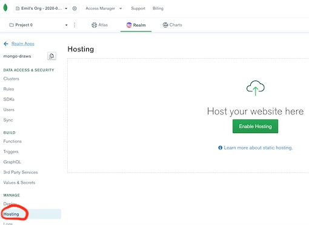
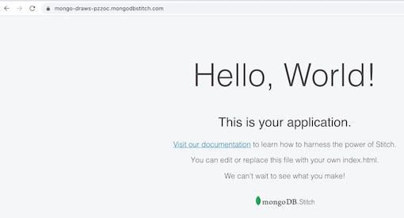

Pixio!
Online Pictionary using MongoDB Atlas, Phaser and Realm. I coined it Pixio for no specific reason. Play a game of Pixio with friends everywhere on mobile and laptop! Go directly to https://mongo-draws-pzzoc.mongodbstitch.com/ or read how you can build this game yourself too.
Where do I get my inspiration from...
This pet project was heavily inspired on (read: completely borrowed) from the post at https://developer.mongodb.com/how-to/creating-multiplayer-drawing-game-phaser, a very nice and readable MongoDB Developer How-to article by Nic Raboy. So thanks a lot Nic!
Gimme the code!
The code can of course be found in the original How-to article. I stored my version in a GitHub repository at
https://github.com/taatuut/pixio
You can just use the code from the Pixio repo and it works out of the box after meeting these requirements:
- Setup your own MongoDB Atlas cluster (available as free tier)
- Create your own Realm app (available in the free tier)
- Host the code somewhere (just use Realm Hosting for it, you are creating the app there anyway).
- Replace the value for realmAppId in the
index.htmlfile with your own Realm App id! More in where to find that later. If you don't use your own Realm app, your pixios end up in my database because I did not take my Realm App id out of the code ¯\_(ツ)_/¯
How do I get this working?
Check out the readme.html in the Pixio repo or online at https://mongo-draws-pzzoc.mongodbstitch.com/readme.html
Application
If you are not using the code from the Pixio repo, then click above link and follow the tutorial until you
created the index.html and game.js file up to the point
where it says 'You did it!'.
MongoDB Atlas
If you don't have a (free) MongoDB Atlas cluster running yet, go to https://www.mongodb.com/cloud and click [ Try MongoDB Cloud
Now
] and signup. If you already have a cluster up, login there. In your Atlas cluster, create a
database mongo-draws with a collection game.
Note: make sure to whitelist access to your cluster for the relevant IP addresses.
Realm
To create a new Realm App, click the Realm link at the top of the page.
Then click [ Create a New App ] and give it the name mongo-draws and connect it to the cluster
where you created the mongo-draws database just a moment ago.

Now the page for the newly created app opens. Enable anonymous authentication by clicking the Providers tab in the Users area of the Realm dashboard, then click [ Edit ] on the line saying 'Allow users to log in anonymously'.
Set the switch to on and click [ Save ]
Anonymous access is now enabled, but must be deployed to take effect. Click [ Review & Deploy], in the window that opens you can review the code changes, then click [ Deploy ]. You will see a message appear with timestamp saying 'Deployment was successful!'.

With the anonymous authentication effectively enabled, we can define the read and write rules of our documents.
Go to the Rules area, confirm that 'No template' is the selected item and click [ Configure Collection ]
Within the Rules area of the Realm dashboard, create two rules for the game collection.
The first rule is for the document owners, give them read and write ability. Non-owners watching Pixio need
read access. Make sure to specify that the owner_id of the document is to be mapped to the
document owner, during the process of creating rules.

First finish owner, then click [ + NEW ROLE ]> and create non-owner role.
You will end up with something like this:
Don't forget to save and deploy. MongoDB Atlas and Realm are now ready to roll with you in Pixio!
If you are following the How-to, it is time to go back here for some more edits to the game.js
and index.html files. If you use the code from the Pixio repo, you are almost done. In both
cases you need to add your own Realm App id as the last step. To get that id, go to the Realm applications
overview to find your mongo-draws app there too.
If you go back in your app, you can copy the app id you need to put in the index.html file
replacing the REALM_APP_ID value in the new Game property "realmAppId" (if you use the code from the Pixio
repo, there might already be another value, just replace that one).
When done, make sure to save all your efforts and deploy this code somewhere on a webserver.
Hint: use Realm Hostinghttps://docs.mongodb.com/realm/hosting/ an option available in the Realm app page too.
Enabling hosting gives you the possibility to upload content through the Realm UI or by using the Realm CLI. It comes with a default index.html (Hello, World!) that we will overwrite when uploading our content.
Hosting also gives you a custom name for your app (in my case it is https://mongo-draws-pzzoc.mongodbstitch.com/), and you can even hook up a domain name you own.
Again, also after uploading content to Realm Hosting, don't forget to review and deploy the changes.Conclusion
The cool thing about this exercise, is that I am able to create a real life online running multi-player game in less than an hour without the need to setup any server, compute or storage resources for the database as this is part of the MongoDB Atlas cluster setup, and Realm offers both the possibilities to create your app (with users, rules), and to host the code. This writeup actually took way more time than bringing the game up and running... And even my family is interested in the results of something work related this time!
But kidding aside, this user friendly serverless Cloud approach just connecting the necessary components is the way to be up and running quickly with any application. Reducing time to market with your next killer product, while addressing the business goals in the blink of an eye. Now all I need to do is sharpen my drawing skills :-)
Happy Pixio, now go play!